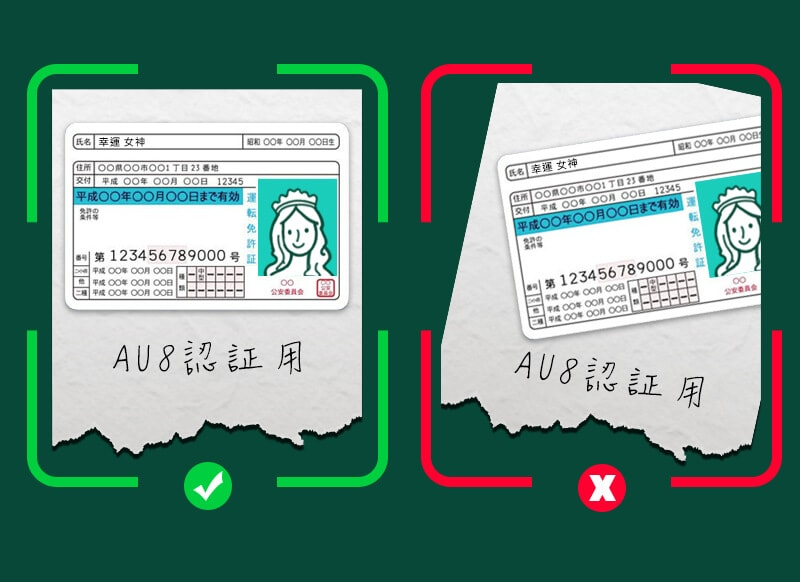

初心者ガイド
- KYC（本人確認及び身分証明書の提示）
-
【出金時必要書類(KYC)】
1. 身分証明書(カラー写真付き)
2. 現住所確認用書類(公共料金などの請求書)
本人確認書類
本人確認書類として認められているのは、以下の5つの書類です。
1. 運転免許証（両面）
2. 住民基本台帳カード（両面）
3. パスポート（表面に写真ページ、裏面に住所記入ページ）
4. 外国人登録証 (ARC)
5. マイナンバーカード（両面）※裏面のマイナンバーは付箋などで隠し可能
必要な情報は、
1. 写真
2. お名前
3. 住所
4. 発行日
5. 有効期限
6. 生年月日
7. バーコード（パスポートの場合）
本人確認書類は、
1. 身分証明書と現住所確認用書類の住所は一致している必要があります
2. 四隅が入るようにすること
3. 手ブレや光の反射を防いで、文字がハッキリ見えるようにすること
4. 有効期限内のもの
上記4点に注意しながら、書類の表面／裏面ともに手書きで「au8認証用」と書いた紙と一緒に撮影してください。
画像加工ソフトなどで編集はしないでください。